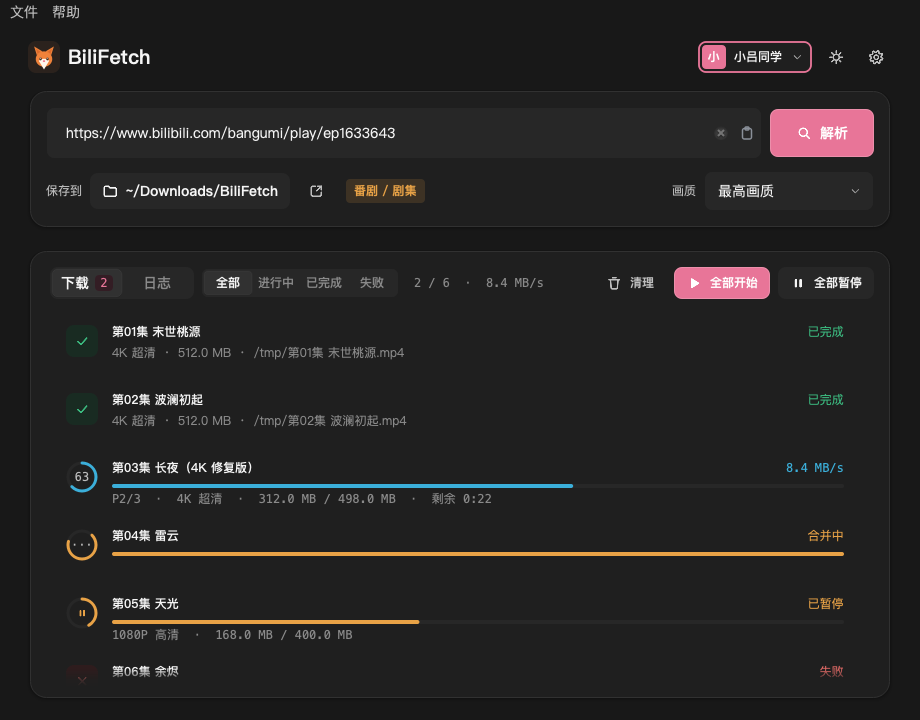

断流重下、停止卡死、剧集覆盖
默认 10 容量连接池跑 32 路音视频线程会导致频繁重握手；命中慢速镜像只能眼看掉到 100 KB/s；没有副标题的番剧整季下载还会互相覆盖成同一个文件。
专为 macOS、Windows 与 Linux 打造的开源桌面与命令行下载器。内置 64 连接并发保活池与多镜像自动测速轮换，粘贴链接即可按真实画质保存本地 MP4。

单节点限速断流时 自动轮换最快镜像续传 点下暂停的那一帧 立刻释放线程并留住每一字节进度
普通脚本在并发拉流时极易耗尽默认连接池，点停止时还要干等几十个阻塞线程超时退出。BiliFetch 从传输层到界面状态机做了端到端重构。
默认 10 容量连接池跑 32 路音视频线程会导致频繁重握手；命中慢速镜像只能眼看掉到 100 KB/s；没有副标题的番剧整季下载还会互相覆盖成同一个文件。
启动下载前并发实测所有候选 CDN 节点吞吐量，任意 4 MiB 分片遇重置立即按已写入字节偏移切往下一镜像；界面状态机与收尾线程解耦，暂停与全部开始均在单帧内完成。
音视频双流各开 16 路 4 MiB HTTP Range 分片并发拉取，底层连接池扩容至 64 条长连接复用；默认绕过易重置连接的系统 TUN 代理，单镜像抖动时自动切向备用高速镜像。
点击「全部暂停」在 13.15 ms 内保留当前进度百分比并释放工作池；点击「全部开始」在 0.40 ms 内拉起新工作线程读取磁盘断点继续传输。
自动区分正片与花絮 PV，统一补齐「第01集」零填充序号；解析收藏夹时自动剔除已失效视频，支持 b23.tv 合集短链直接展开。
内置 B 站客户端扫码登录，Cookie 仅保存在本机应用目录；开始下载后实时回传服务端实际下发的清晰度档位（如 4K、1080P60 或未登录 480P），拒绝虚假标签。
图形界面与终端命令行共享同一套解析与分片引擎，覆盖 macOS、Windows 与主流 Linux 发行版。
切回窗口时自动识别剪贴板中的视频、番剧 ep/ss、UP 主合集、收藏夹或 b23.tv 短链，回车即可解析。
支持关键词搜索、区间连选、花絮一键折叠以及仅提取高品质音频轨。
队列支持随时全部暂停与全部开始，下载完成后双击条目即可在访达或资源管理器中定位文件。
安装依赖、高清画质权限与网络代理相关的说明都在这里。
这是开源个人应用未购买商业公证所致。在访达的「应用程序」中右键点击 BiliFetch.app，选择「打开」并再次确认即可，后续双击不再弹窗；使用 Homebrew Cask 安装则会自动移除隔离属性。
B 站高清视频采用 DASH 音视频分离流传输。Windows 独立包已内置 ffmpeg.exe；macOS 只需执行一次 brew install ffmpeg，Linux 执行 apt install ffmpeg，即可完成毫秒级无损流拷贝合并。
扫码流程直接与 B 站官方接口通信，不经过任何第三方服务器。登录凭据仅保存在你本机系统的应用配置目录（settings.json）中，随时可在右上角账号菜单一键退出清除。
可获取的最高清晰度取决于当前账号权限：未登录状态官方仅下发 480P，普通登录解锁 1080P，大会员解锁 1080P60、4K 与杜比视界。下载行会如实显示实际拿到的清晰度。
部分海外代理或 TUN 虚拟网卡会劫持并重置国内 CDN 连接。BiliFetch 默认绕过系统环境变量直连国内 CDN；如确实需要走代理，可在右上角设置弹窗中手动填写代理地址。
在的。每个 4 MiB 分片写入完成后都会实时记录在同目录的 .part.state 文件中。无论点击「全部暂停」还是下次重开软件重新提交，都会直接跳过已完成分片继续传输。
遵循 MIT 开源协议，无需注册外部账号，无订阅与内购限制，所有源码与构建脚本在 GitHub 完全公开可查。